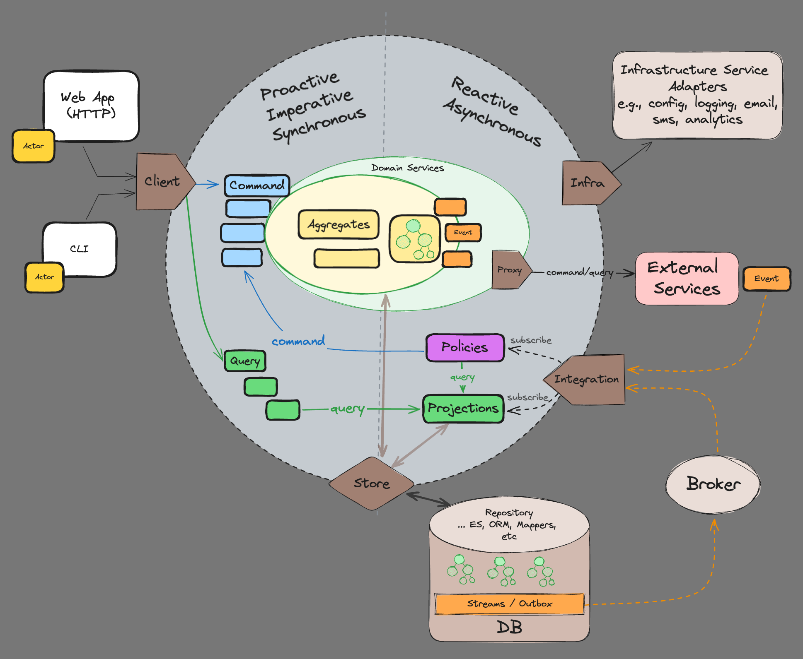
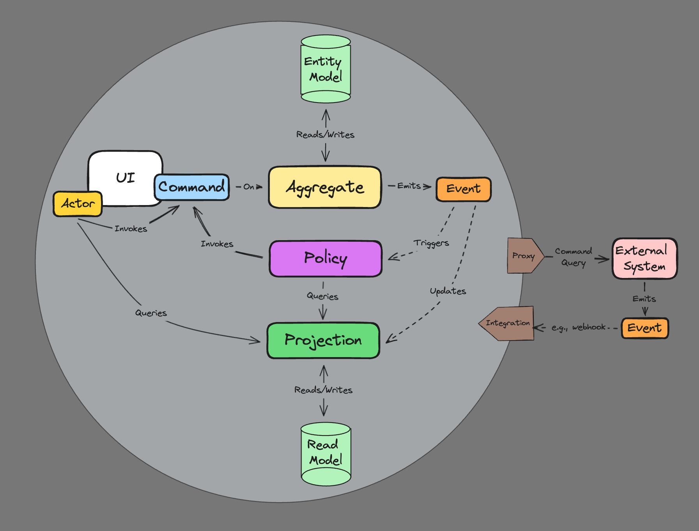
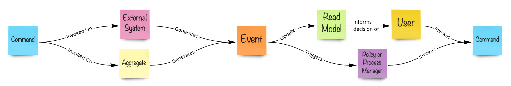
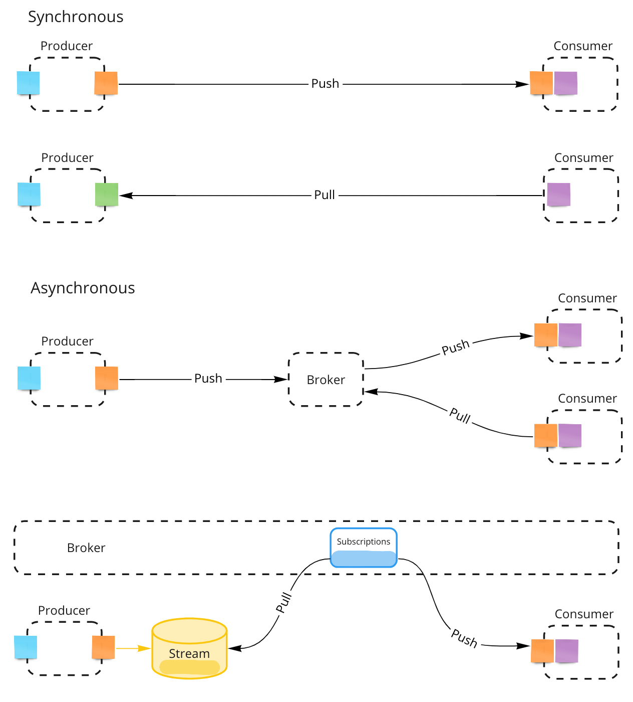
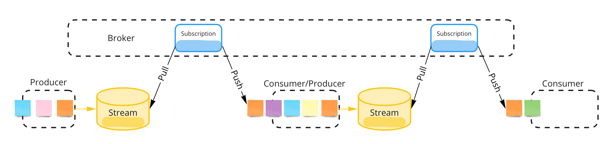
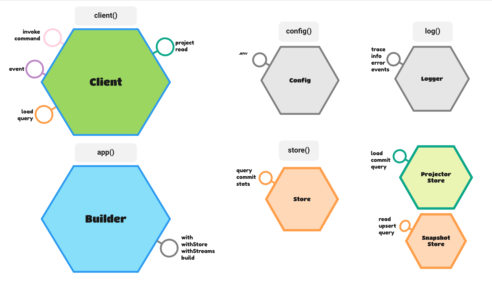

Module @rotorsoft/eventually - v5.8.6
eventually 

This project aims at exploring a practical solution to the problem of "building software systems that gracefully evolve with a constantly changing organization". Changes can be driven by new business requirements, market conditions, or anything that causes the software building teams to grow, shrink, or be replaced.
The truth is that many software systems fail because they become "unmaintainable black boxes" of accumulated "human decisions", where those responsible are long gone, or don't remember exactly why they made those decisions. We have tried to mitigate this by investing in "documentation" at many levels, but usually producing another large collection of stale documents a few people will actually read.
Our goal is to provide a simple recipe for building general business applications grounded on well known methodologies, patterns, and tools. We are subscribing to the ideas that started the DDD movement almost 20 years ago, but we are focusing on the issue of systematically organizing the development process.
This is an attempt to find a more axiomatic approach to "transfer" (not translate) information from domain models into software projects. By following a few "technical conventions", we can show new engineers how to look at our software projects as a "reflection of business models" that any stakeholder can understand and explain.
Methodologies, Patterns, and Tools
- Domain Driven Design - DDD
- The Reactive Manifesto
- Event Storming
- Event Sourcing - ES
- Command Query Responsibility Segregation - CQRS
- Hexagonal Architecture
- CUPID Principles
Logical Domain Models
Tackle complexity early by understanding the domain
Software engineering should be approached as a “group learning process”, a close collaboration among clients, domain experts, and engineers that iteratively produces “clear business models” as the drivers of implementations - source code should be seen as a side effect.
We believe in writing software that looks like the business. The deeper we can track business models within software projects and deployed infrastructure, the easier to understand and adjust to future changes in business requirements.
We recommend using Event Storming as the necessary first step to understand and model what we are trying to build. This methodology is extremely easy to learn by both the technical and business communities, and it plays very nicely with the other tools we recommend here (DDD, ES, CQRS). The resulting models can usually get transferred to source code by straightforward one-to-one mappings to DDD artifacts and the working patterns of reactive systems.
Value Proposition
This project is also trying to address the following issues:
-
Future Proof Single Source of Truth - The “append-only” nature of event sourced systems is an old and battle-tested concept. The replayability aspect of it guarantees full auditability, integrability, and testability.
-
Transparent Model-To-Implementation Process - Focus on transferring business models to code with minimal technical load. A “convention over configuration” philosophy removes tedious decision-making from the process.
-
Ability to Swap Infrastructure - Following the hexagonal architecture based on ports and adapters.
Building your first Reactive Micro-Service
The anatomy of a micro-service as a reflection of the business model
From a technical perspective, reactive microservices encapsulate a small number of "protocol-agnostic" message handlers in charge of solving specific business problems. These handlers are grouped together logically according to a domain model, and can be optionally "reducible" to some kind of pesistent state.
| Message Handler | Consumes | Produces | Artifacts | Description |
|---|---|---|---|---|
| Command Handler | Commands | Events | Aggregates | Streamable & Reducible - Consitency boundaries on a cluster of business entities |
| Event Handler | Events | Commands | Policies, Process Managers | Process managers can expand the consistency boundary around many aggregates |
| Event Handler | Events | Read Model | Projectors | Creates fit-for-purpose read models (aka materialized views) |
Composing Complex Systems
In eventually we try to separate domain concerns from system concerns

The biggest question we usually face when implementing real micro-service based systems is "how do we move information around services?". There are several well-known integration patterns available, but in general, we can divide services into "producers" and "consumers" of information. Producers are "upstream" of consumers. Since services are separated by network boundaries, this information gets transferred via network "messages" either "synchronously" or "asynchronously".
As system architects, we need to decide how information flows from service to service in order to accomplish a specific business goal. We need to understand the tradeoffs when choosing synchronous vs. asynchronous messaging styles, as well as consider message contracts and what happens when these change over time. There are no right or wrong answers here, but we will try to provide some basic rules based on simple conventions and practical principles.
- There are only two types of messages
- Commands: Imperative actions invoked by human or machine actors. Can be rejected when business invariants are not met
- Events: Represent interesting "things" that already happened in the system (named in past tense). Used to communicate these "things" to the rest of the system
- Commands are synchronous (request/reply patterns)
- Events are asynchronous (pub/sub patterns) and transferred by message brokers with
at-least-onceandin-orderdelivery guarantees - Events are expected to be eventually consumed by downstream services "subscribed" to event streams
- Producers and Consumers don't need to know about each other (in a fully decoupled system)
- We use "Event Sourcing" to persist all produced events as consumable streams. This guarantees
in-orderdelivery - Asynchronous business flows can be designed by connecting consumers with producers via subscriptions
- A broker service will sit at a higher level to deal with channel subscriptions and communications
- Synchronous flows are also possible, but not recommended in general
- Querying read only projections synchronously is a common practice
Integration Patterns
Event Storming Models are like Lego games where there is only one way to connect the pieces (DDD artifacts)

But those pieces live inside domain contexts and physical services. In DDD, you build larger systems by connecting domain contexts in Context Maps following well-known integration patterns.


Routing Conventions
Message handlers are routed by convention. Getters provide the current state of reducible artifacts, and they can be used to audit their streams or for integrations via polling. We provide an in-memory app adapter to facilitate integration testing, while the express app adapter is our default REST-based service adapter in real production systems:
| Artifact | POST | GET |
|---|---|---|
| Aggregate | /aggregate/:id/command |
/aggregate/:id/aggregate/:id/stream |
| Process Manager | /process-manager |
/process-manager/:stream/process-manager/:stream/stream |
| Policy | /policy |
|
| Projector | /projector |
/projector/:id (TBD: Fee form query API) |
| All Stream | /all?[stream=...][&names=...][&after=-1][&limit=1][&before=...][&created_after=...][&created_before=...] |
Testing
We group unit tests inside __tests__ folders. Tests should mainly focus on testing business flows in a BDD like pattern:
given[messages]when[message]expect[state]
Framework Ports
The framework provides a number of ports (abstract interfaces) that can be used to interact with a service from the outside:
app()is the main service builderclient()can be used mainly to implement BDD style testing or to send messages directly to the service behindapp()config()provides .env loading and schema validation utilitieslog()provides logging utilitiesstore()encapsulates event stream storage and retrieval

Version 4 Breaking Changes
- Removed messages scopes (public/private) and
.withPrivatebuilder option. TODO - reasons - Decoupled
brokerfrom framework and removed.withTopicfrom builder. Services should be agnostic of system integrations. A new./services/brokerservice was added as an implementation template for this higher level responsibility. - Independent seed function in stores, to be called by service bootstrap logic or CI/CD pipelines according to hosting options
- Stores (and all ports in general) are initialized by factories when invoked for the first time, and those resources are disposed by new dispose utility - Removed init/close pattern
- Use dispose()() in unit tests teardown
Version 5 Breaking Changes
- Simpler app builder port based on simpler artifact metadata
- Renamed and moved message handlers and reducers to conform to a new general "artifact" pattern
- Moved message handlers to client port
- Fully replaced joi with zod - zod is much smaller and allows type inference